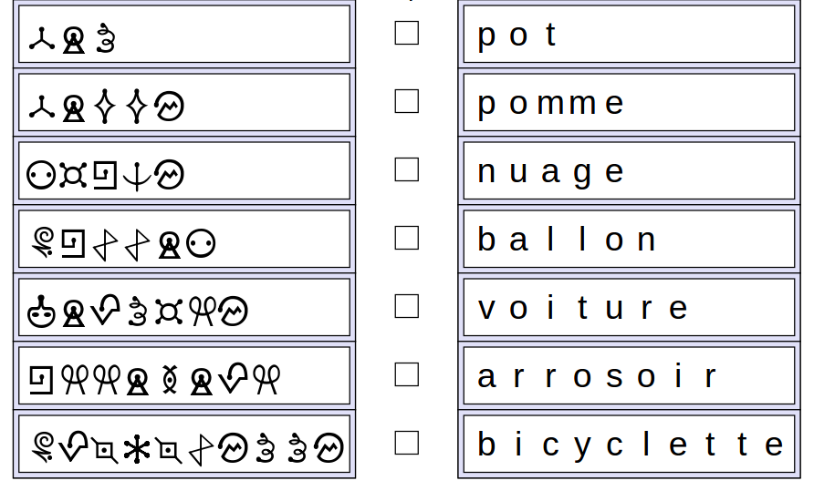
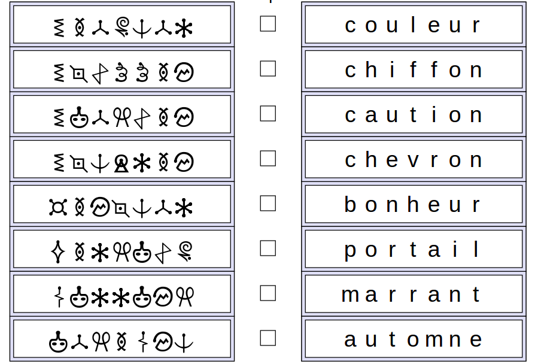
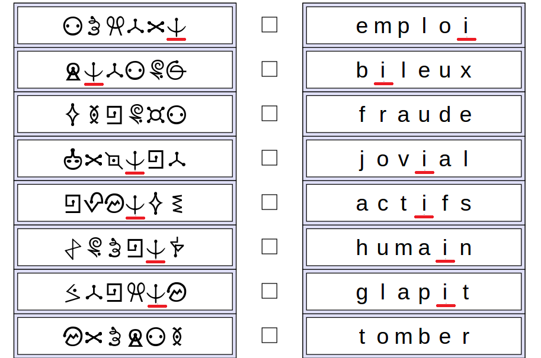

Aymeric code ses messages en remplaçant chaque lettre par un symbole.
Glissez les étiquettes pour que chaque mot codé soit en face du nom d'objet correspondant.
Quand vous êtes sûrs d'une ligne, vous pouvez la bloquer avec la case du milieu.
Attention : les trois versions de ce sujet n'utilisent pas les mêmes symboles pour les mêmes lettres.
Voici deux exemples d'approches possibles :
Trier les mots par longueur croissante de chaque côté. Tous les mots sont identifiés sauf « pomme » et « nuage » que l'on distingue car « pomme » contient une lettre double.
Commencer par regarder la position des lettres doubles, et repérer le mot « arrosoir », seul mot qui a une lettre double aux positions 2 et 3. On sait alors reconnaître les symboles correspondant à chacune des lettres de ce mot, ce qui nous aide à reconnaître facilement les autres mots.

On peut repérer que quatre mots commencent par la lettre « c », et y associer les quatre mots chiffrés commençant par le même symbole. Parmi ces mots, « couleur » est le seul qui ne finit pa par « n », donc on l'identifie, ce qui nous permet de reconnaître les symboles correspondant à c, o, u, l, e et r.

Une approche efficace consiste à se concentrer sur la lettre « i », présente la plupart des mots à différentes positions.
On repère notamment que le « i » est la seulle lettre qui apparaît deux fois dans l'avant dernière colonne. On en déduit le symbole correspondant au « i », celui en forme d'ancre.
On peut alors par exemple identifier le seul mot qui finit par un « i », « emploi », et en déduire les symboles correspondant à chacune de ses lettres.

Dans cet exercice on a fait de la cryptanalyse en exploitant les faiblesses du chiffrement par substitution. Différentes propriétés sont préservées par ce chiffrement, comme la longueur des mots, les lettres doubles et lettres les plus fréquentes.
Si une méthode de chiffrement laisse apparente des propriétés du message d'origine, cela constitue une faiblesse que les cryptanalistes vont chercher à exploiter pour retrouver le message d'origine.
Exemple : En 2009 Karsten Nohl a découvert une faille de sécurité dans la technologie de téléphonie mobile GSM 2G, où la conversation est numérisée et transformée dans un message qui a une structure particulière, avant d'être chiffrée. Nohl a prouvé que certaines structures du message étaient encore détectables après le chiffrement et permettaient d'écouter des conversations privées. Cette faiblesse n'est plus présente depuis la technologies 3G, mais les téléphones passent automatiquement en mode 2G quand ils n'arrivent pas à se connecter à un réseau plus récent.